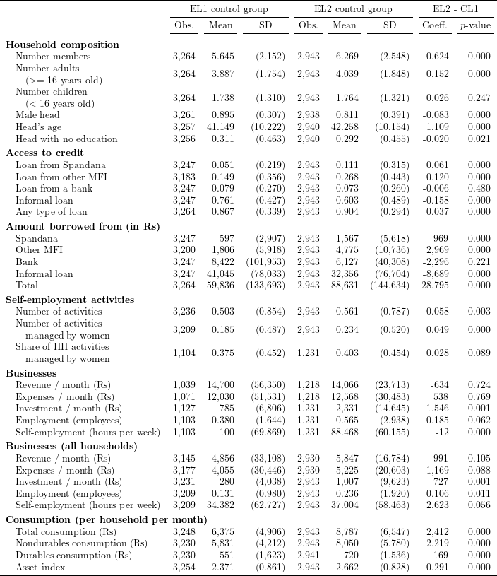

To read the created .tex file, the following \(\LaTeX\) packages are required:
# Install and load packages ---------------
packages <- c(
"tidyverse",
"haven",
"lfe",
"stargazer",
"broom",
"kableExtra",
"magrittr"
)
pacman::p_load(packages, character.only = TRUE, install = TRUE)
# Load an example dataset ---------------
data_endline <- read_dta("Banerjee2015_replication/2013-0533_data_endlines1and2.dta")# outcome variables
hh_composition <- c(
"hhsize", "adults", "children", "male_head", "head_age", "head_noeduc"
)
credit_access <- c(
"spandana", "othermfi", "anybank", "anyinformal", "anyloan"
)
loan_amt <- c(
"spandana_amt", "othermfi_amt", "bank_amt", "informal_amt", "anyloan_amt"
)
self_emp_activ <- c(
"total_biz", "female_biz", "female_biz_pct"
)
businesses <- c(
"bizrev", "bizexpense", "bizinvestment",
"bizemployees", "hours_week_biz"
)
businesses_allHH <- c(
"bizrev_allHH", "bizexpense_allHH", "bizinvestment_allHH",
"bizemployees_allHH", "hours_week_biz_allHH"
)
consumption <- c(
"total_exp_mo", "nondurable_exp_mo", "durables_exp_mo", "home_durable_index"
)
all_varlist <- c(
hh_composition, credit_access, loan_amt, self_emp_activ,
businesses, businesses_allHH, consumption
)
# data cleaning
data_table1B <- data_endline
for (i in seq(2)) {
data_table1B <- data_table1B %>%
mutate(
across(
.cols = paste0(businesses, "_", as.character(i)),
.fns = ~ .x,
.names = paste0("{col}_allHH_", as.character(i))
)
) %>%
mutate(
across(
.cols = paste0(businesses, "_", as.character(i)),
.fns = ~ ifelse(eval(parse(text = paste0("total_biz_", as.character(i)))) == 0, NaN, .x)
)
) %>%
rename_with(
~ str_replace(.x, paste0("_", as.character(i), "_allHH"), "_allHH")
)
}
# variable labels
var_labels <- c(
"Number members", "Number adults \n \\hspace{1em}($>=$ 16 years old)",
"Number children \n \\hspace{1em}($<$ 16 years old)",
"Male head", "Head's age", "Head with no education",
"Loan from Spandana", "Loan from other MFI",
"Loan from a bank", "Informal loan",
"Any type of loan",
"Spandana", "Other MFI", "Bank", "Informal loan",
"Total",
"Number of activities",
"Number of activities \n \\hspace{1em}managed by women",
"Share of HH activities \n \\hspace{1em}managed by women",
"Revenue / month (Rs)", "Expenses / month (Rs)",
"Investment / month (Rs)", "Employment (employees)",
"Self-employment (hours per week)",
"Revenue / month (Rs)", "Expenses / month (Rs)",
"Investment / month (Rs)", "Employment (employees)",
"Self-employment (hours per week)",
"Total consumption (Rs)", "Nondurables consumption (Rs)",
"Durables consumption (Rs)", "Asset index"
)
# function to create a panel for control group
control_group_sumstat <- function(varlist, var_labels, data) {
output <- data %>%
select(all_of(varlist)) %>%
map( ~ tibble(
obs = format(sum(!is.na(.x)), digits = 0, format = "f", big.mark = ","),
mean_var = mean(.x, na.rm = TRUE),
sd_var = sd(.x, na.rm = TRUE)
)
) %>%
tibble() %>%
unnest(".") %>%
mutate(
col_names = var_labels,
mean_var = ifelse(
mean_var >= 100,
formatC(mean_var, digits = 0, format = "f", big.mark = ","),
formatC(mean_var, digits = 3, format = "f", big.mark = ",")
),
sd_var = paste0(
"(",
ifelse(
sd_var >= 100,
formatC(sd_var, digits = 0, format = "f", big.mark = ","),
formatC(sd_var, digits = 3, format = "f", big.mark = ",")
),
")"
)
) %>%
relocate(col_names)
return(output)
}
# function to create a panel comparing two endlines
EL2_EL1_sumstat <- function(varlist, data) {
data_long <- data %>%
select(c("treatment", "areaid", paste0(varlist, "_1"), paste0(varlist, "_2"))) %>%
pivot_longer(
cols = c(paste0(varlist, "_1"), paste0(varlist, "_2")),
names_to = c(".value", "endline"),
names_patter = "(.*)(_\\d$)"
)
output <- map(varlist, function(x) felm(
formula(
paste0(x, "~ as.factor(endline) | 0 | 0 | areaid"),
),
data = data_long %>% filter(treatment == 0))
) %>%
enframe("model_no", "model") %>%
mutate(
estimate = map_dbl(
model,
function(x) summary(x)$coefficients["as.factor(endline)_2", "Estimate"]
),
p_value = map_dbl(
model,
function(x) waldtest(x, "as.factor(endline)_2")["p.F"]
)
) %>%
select(estimate, p_value) %>%
mutate(
across(
.cols = c(estimate, p_value),
.fns = function(x) ifelse(
abs(x) > 10,
formatC(x, digits = 0, format = "f", big.mark = ","),
formatC(x, digits = 3, format = "f")
)
)
)
return(output)
}
# combine panels
cbind(
control_group_sumstat(
paste0(all_varlist, "_1"),
var_labels,
data_table1B %>% filter(treatment == 0)
) %>%
rename_with(.fn = function(x) paste0(x, "_1"), .cols = obs:sd_var),
control_group_sumstat(
paste0(all_varlist, "_2"),
var_labels,
data_table1B %>% filter(treatment == 0)
) %>%
rename_with(.fn = function(x) paste0(x, "_2"), .cols = obs:sd_var) %>%
select(-col_names),
EL2_EL1_sumstat(all_varlist, data_table1B)
) %>%
mutate_all(linebreak, align = "l") %>%
set_colnames(NULL) %>%
kable("latex", booktabs = TRUE, escape = FALSE, align = c("l", rep("r", 8))) %>%
kable_styling(latex_options = "scale_down") %>%
add_header_above(
c(" ", rep(c("Obs.", "Mean", "SD"), 2), "Coeff.", "$p$-value"),
escape = FALSE
) %>%
add_header_above(
c(
" " = 1, "EL1 control group" = 3,
"EL2 control group" = 3, "EL2 - CL1" = 2
)
) %>%
pack_rows(index = c(
"Household composition" = length(hh_composition),
"Access to credit" = length(credit_access),
"Amount borrowed from (in Rs)" = length(loan_amt),
"Self-employment activities" = length(self_emp_activ),
"Businesses" = length(businesses),
"Businesses (all households)" = length(businesses_allHH),
"Consumption (per household per month)" = length(consumption)
)) %>%
save_kable("tex/Banerjee_table1B_replicate.tex")